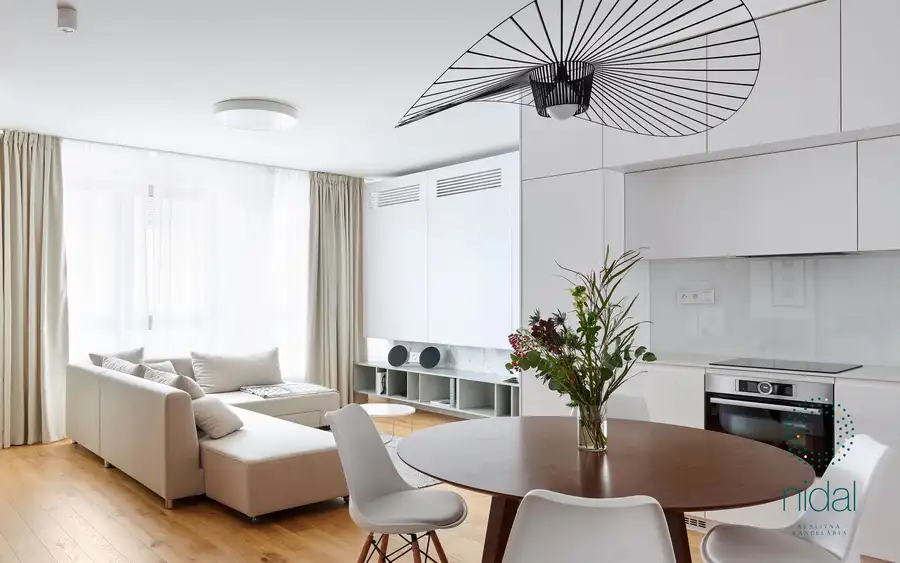
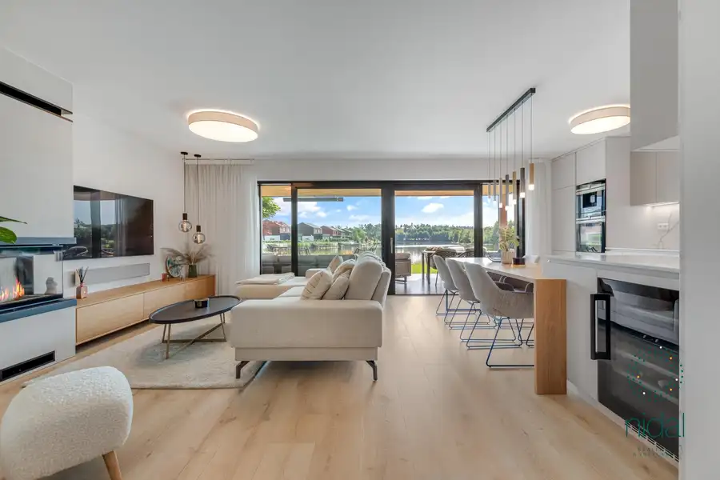
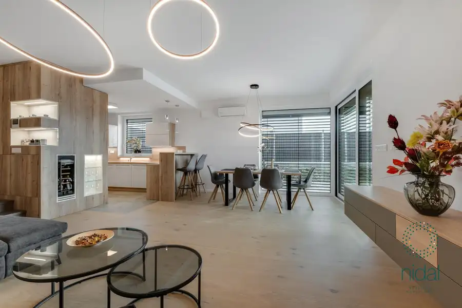

NIDAL: PREDAJ - Slnečný, dizajnový 4-izbový byt s priestrannou terasou s vírivkou v projekte Slnečnice - Petržalka
Petržalka, Bratislava
- Dispozícia4-izbový
- Plocha124 m²
- Poschodie5. z 5
- StavNovostavba
- Energetická triedaB
O nehnuteľnosti
Základné informáciePonúkame na predaj výnimočný, svetlý a nadštandardne zariadený 4-izbový byt s priestrannou, z časti presklennou terasou, na ktorej sa nachádza záhradné sedenie, sprcha ale aj malý súkromný wellness v podobe vírivky. Nehnuteľnosť zaujme najmä slnečnou dennou časťou, prepracovaným interiérom a exteriérom, ktorý poskytuje plnohodnotný priestor na relax aj spoločenské využitie.K bytu sú k dispozícii 4 parkovacie státia, jedno je vybavené nabíjačkou na elektromobil. Všetky sú zabezpečené kamerovým systémom.Hlavné parametre * úžitková plocha bytu: 124m² * terasa: 98m² * 4-izbový byt * 2 pivničné kobky * 4 parkovacile miesta (1 s nabíjačkou na elektromobil) * orientácia juh, západ * terasa prístupná z dennej zóny * klimatizácia * exteriérové roletyFinančné podmienky * Cena bytu: 799 000€ * Cena jedného parkovacieho státia štandard: 27 000€ * Cena parkovacieho státia s nabíjačkou: 33 000€ * Cena jednej pivničnej kobky: 8 000€ * Celková cena: 867 000€ V cene bytu je zhrnuté zariadenie bytu a terasyDispozícia * vstupná chodba so vstavaným úložným priestorom * samostatné wc s umývadlom * kúpelňa s 2 umývadlami, vaňou, sprchovým kútom, wc a vybavená práčkou a sušičkou * dve spálne s posteľou a úložným priestorom, s výstupom na terasu * izba zariadená s gaučom, možnosť využitia aj ako tretia spálňa s výstupom na terasu * veľký priestranný walk-in šatník * obývačka spojená s kuchyňou s výstupom na terasu * obývačka zariadená L-kovou sedačkou, konferenčným stolíkom, TV stolíkom, taburetkou a zavesenou TV * kuchyňa je vybavená vstavanými spotrebičmi ako chladnička, kávovar, rúra, umývačka riadu, digestor. Nachádza sa tu aj priestranná komora a vínna chladnička * terasa je čiastočne zasklená, vybavená záhraným nábytkom, sedením, sprchou, vírivkouLokalitaRezidenčný projekt Slnečnice Viladomy sa nachádza v krásnej novovzniknutej autonómnej štvrti s výbornou občianskou vybavenosťou, takže väčšinu bežných záležitostí vybavíte priamo "pod domom" v zelených vnútroblokoch. Komplex bol navrhnutý uznávanými architektmi a vďaka prieniku praktických výhod, svojej jedinečnej estetike a kvalite získal prestížne ocenenia. Električková trať do centra mesta ešte viac zvýši atraktivitu lokality. Na príjemné trávenie voľného času Vám skvele poslúžia ihriská a športoviská priamo v areáli alebo blízke lužné lesy, cyklotrasy, známa Dunajská hrádza či Rusovské jazerá.Ak Vás ponuka zaujala, neváhajte nás kontaktovať a náš agent Vasyl vás rád privíta na obhliadke:Vasyl Kunychka+421 948 494 133kunychka.vasyl@nidal.sk
Parametre
| Cena vrátane energií | Nie |
|---|---|
| Druh | 4 izbový byt |
| Dátum zverejnenia | 20. 5. 2026 |
| Energetický certifikát budovy | B |
| Orientácia | Južná, Západná |
| Plocha terasy v m2 | 98 m² |
| Podlažie | 5 |
| Počet izieb / miestností | 4 |
| Počet nadzemných podlaží | 5 |
| Počet parkovacích miest v garáži | 4 |
| Počet pivníc | 2 |
| Rok kolaudácie | 2014 |
| Rok výstavby | 2014 |
| Stav nehnuteľnosti | Novostavba |
| Terás | 1 |
| Typ | Predaj |
| Typ konštrukcie | Tehlová, Železobetónová |
| Umiestnenie | Posledné podlažie |
| Vybavenie | Terasa, Pivnica, Výťah |
| Vykurovanie | Klimatizacia, Podlahové |
| Úžitková plocha | 124 m² |
Kde to je


Mohlo by Vás zaujímať

BytNové10 395 000 €NIDAL: Predaj – zariadený 2-izbový byt so zasklenou loggiou na Cintorínskej 10 v Starom Meste Staré Mesto, Bratislava 2-izbový61.62 m²5. podlažie NIDAL ponúka na predaj moderne zariadený 2-izbový byt na Cintorínskej ulici v Bratislave – Staré Mesto. Byt sa nachádza na 4. poschodí bytového domu…
DomNové10 615 000 €NIDAL: PREDAJ - Nádherný designový dom na brehu jazera s vlastným mólom pri golfovom areáli Penati Šajdíkove Humence 120 m² Základné informáciePonúkame Vám na predaj nadštandardný, podmanivý 3-izbový dom s dvoma podlažiami, krásnym trávnatým dvorom, terasou a súkromným…
DomNové10 549 000 €NIDAL: PREDAJ - 4 izbový rodinný dom v Záhorskej Bystrici Záhorská Bystrica, Bratislava 113.2 m² Základné informácieNIDAL ponúka na predaj nádhernú novostavbu rodinného domu na začiatku Záhorskej Bystrice, časť Orešianky. Po vstupe do domu je Vám…